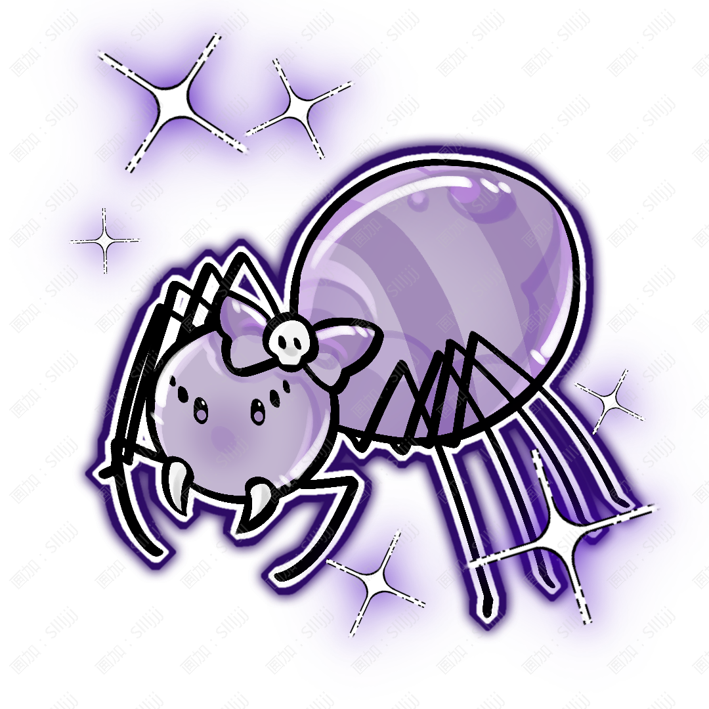

Visali
薇紗莉

姓名：薇紗莉 。
英文：Visali。
種族：特殊生命——覺醒木偶。
性別：女。
生日：11月06日。
年齡：從被製作出來至今約112年；真正產生完整自我意識約23年。
居住：浮燈自治區，現在居住在河道附近一間不大的木偶修復鋪二樓。
身高：168cm。
體重：34kg。
紫黑色捲髮，擁有十分顯眼的異瞳，左眼爲粉色，右眼爲紫色，兩隻眼睛的瞳孔中都有愛心形狀，並且沒有普通眼睛一樣的高光，因此安靜不動的時候會顯得很像真正的人偶。
肩膀、手腕、手指、膝蓋與腳踝等位置能夠明顯看見木偶關節。
她的外表原本被製作得十分精緻，因爲過去長期作爲舞臺上的重要木偶演員使用，面部甚至保留着近似真人的細膩輪廓。
但在被遺棄後的漫長時間裏，她的身體逐漸腐壞並出現大量裂痕。
後來其他廢棄木偶拆下自己尚且完好的材料替她修復，因此如今她身體內部類似血管的靈性脈絡透得十分明顯。
臉上的裂痕最嚴重。一道無法徹底修復的裂紋從臉側延伸到眼睛下方，因此她常年戴着一頂垂有薄紗的帽子。
薄紗不會完全遮住臉，只會讓裂紋從遠處看起來沒有那麼明顯。
安靜、溫和、慢熱，有一點奇怪的幽默感。
她說話的語氣經常十分平靜，即使是在說非常離譜的話，表情也不會發生太大變化。
因爲最初作爲“演員”存在，她非常擅長模仿不同人的動作、聲音與情緒。
可真正擁有自我以後，她反而花了很長時間才學會分辨——什麼是角色應該表現出的感情，什麼纔是屬於自己的感情。
她非常珍惜舊東西，在她看來，“沒有人需要了”並不代表一件東西已經沒有價值。
因此即使只是掉了一顆釦子的舊玩偶，她也會認真修好。她不害怕自己的裂痕，但不喜歡陌生人一直盯着看，所以才習慣用帽紗稍微遮住。
浮燈自治區木偶修復師；曾經的著名錶演木偶；偶爾受墨青邀請進入學院擔任社團臨時助教。
收集被丟棄的小飾品、替自己的帽子換紗、坐在劇院最後一排看別人表演；
非常喜歡觀察蜘蛛織網，有時候能看很久。
希望有一天能夠建立一個專門收留、修復舊人偶與覺醒人造生命的地方。
她不希望那些已經產生意識的特殊生命，因爲製造者離開或原本機構倒閉，就再次變成“沒人要的東西”。
木偶修復、舞臺表演、模仿、縫紉、木材處理、機關結構、細線控制；
因爲極其瞭解木偶身體的結構，也能夠自己完成大部分身體維護。
力量：★★★☆☆
體力：★★★★☆
智慧：★★★★☆
魅力：★★★★★
幸運：★★☆☆☆
武器：傀儡絲。
屬性：絲、木。
技能：
「牽絲」
薇紗莉從十指釋放極細的屬性絲線。絲線可以纏繞物體、改變小型物體的位置，也能夠固定在建築、樹木或其他物體上，讓薇紗莉迅速改變自己的移動方向。她不會直接操控擁有意識的人。
「偶替」
薇紗莉可以暫時控制附近沒有生命的木偶、玩偶或小型木製物體活動。被控制的物體不會因此產生意識，只是按照薇紗莉的控制進行移動。因此她經常同時操縱數個小木偶干擾敵人。
「織幕」
大量絲線在周圍快速交錯，形成近似蜘蛛網的結構。絲線本身十分堅韌，可以攔截小型飛行物、限制敵人的行動，也能夠在建築之間形成臨時落腳點。
大招「千偶劇場」
薇紗莉將大量傀儡絲向四周展開，使範圍內能夠被控制的無生命物體全部連接在自己的絲線上。廢棄木偶、舞臺道具、木製裝飾甚至破碎的木片都會被絲線牽起。整個範圍短暫變成屬於她的“舞臺”。她站在中央操縱所有絲線，讓無數木偶與木片同時行動。戰鬥結束以後，所有東西都會重新落回原處。
特殊體質：薇紗莉沒有普通人類的血肉身體。她不需要正常進食，也沒有人類意義上的心跳，但需要定期維護木材、關節與內部結構。身體某部分損壞以後，只要維持意識的核心結構沒有受到嚴重破壞，就可以使用合適的材料進行修復或替換。因此她從來沒有追求讓自己的身體恢復成“剛被製造出來時”的樣子。
小蛛。
種類：蜘蛛類靈獸。
屬性：絲。
小蛛是一隻巴掌大小的蜘蛛類靈獸。是在廢棄劇院荒廢之後住進來的。
之後它不知道什麼時候爬到微微的臉上，之後在微微有自我意識後，和它成爲了家人。
小蛛平時很喜歡躲在她的帽子、袖口或肩膀附近，也會幫助她檢查傀儡絲有沒有斷裂。
能力：
「蛛絲」：小蛛能夠吐出帶有少量絲屬性的蛛絲。蛛絲不適合正面攻擊，但可以固定細小零件、臨時連接斷裂的傀儡絲，也能在附近留下幾乎看不見的警戒線。